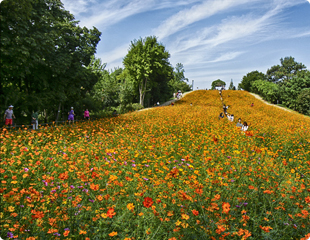

우리 동네 어린이 공원은 어디에 있나요?
우리구에서 관리하는 어린이공원은 총 82개소로 어린이들이 안전하고 쾌적한 환경에서 마음껏 뛰어 놀수 있도록 어린이공원 현대화사업을 추진중이며 담배연기없는 금연공원으로 지정하여 관리하고 있습니다.
 자세히 보기
자세히 보기
우리구에서 관리하는 어린이공원은 총 82개소로 어린이들이 안전하고 쾌적한 환경에서 마음껏 뛰어 놀수 있도록 어린이공원 현대화사업을 추진중이며 담배연기없는 금연공원으로 지정하여 관리하고 있습니다.
자세히 보기
생태경관보전지역은 「자연환경보전법」에 의거 ‘생물다양성이 풍부하여 생태적으로 중요하거나 자연경관이 수려하여 특별히 보전할 가치가 큰 지역’을 대상으로 인위적인 개발을 방지하고 동·식물 서식처 및 자연생태계를 보전·관리하는 지역을 말합니다.
자세히 보기
우리구에는 석촌호수, 올림픽공원, 아시아공원, 한강시민공원, 오금공원 등 아름다운 공원들이 많이 있어요.
자세히 보기
송파는 서울에서 유일하게 호수가 있는 아름다운 도시입니다.
언제든 쉬어갈 수 있는 녹색휴식처 건강은 물론 마음의 여유까지 생각하는 도심속의 오아시스입니다.
송파나루터가 있던 자리에 한강매립사업을 통해 형성된 석촌호수는 둘레 2.5킬로미터의 송파구를 대표하는 호수공원입니다.

다채로운 즐거움을 맛볼 수 있는 곳. 놀이공원과 백화점, 호텔, 쇼핑몰, 영화관 등을 묶은 레저와 쇼핑복합공간입니다.

1977년부터 시공하여 1984년 9월에 완공된 최대 규모의 경기장으로 승승장구하고있는 한국 스포츠의 역사를 빛낸 주역입니다.

우리 아이들이 행복하게 자라는 곳, 송파구로 가꾸어 가겠습니다.